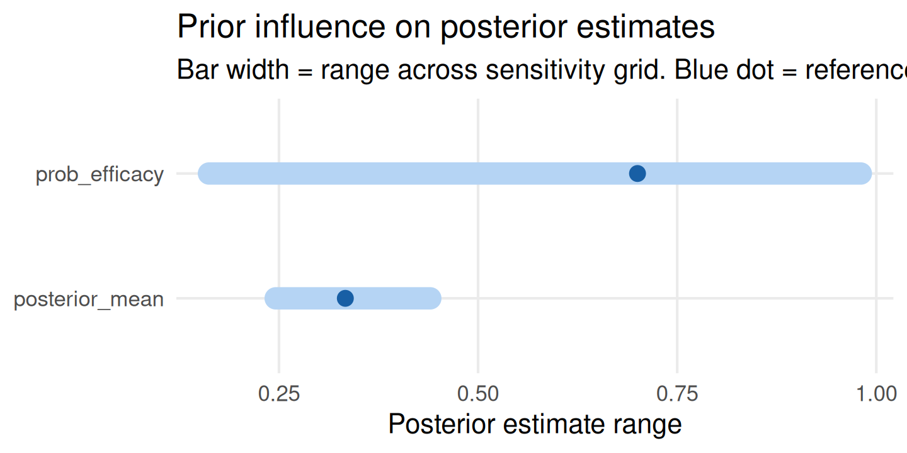
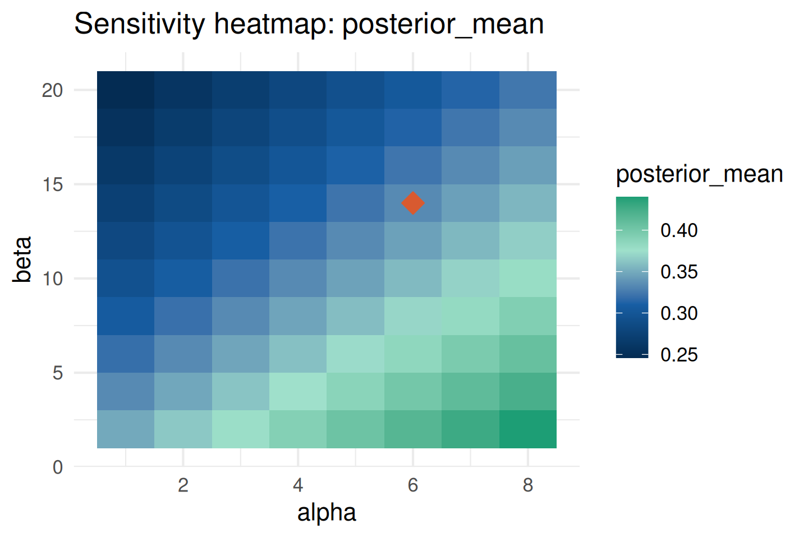
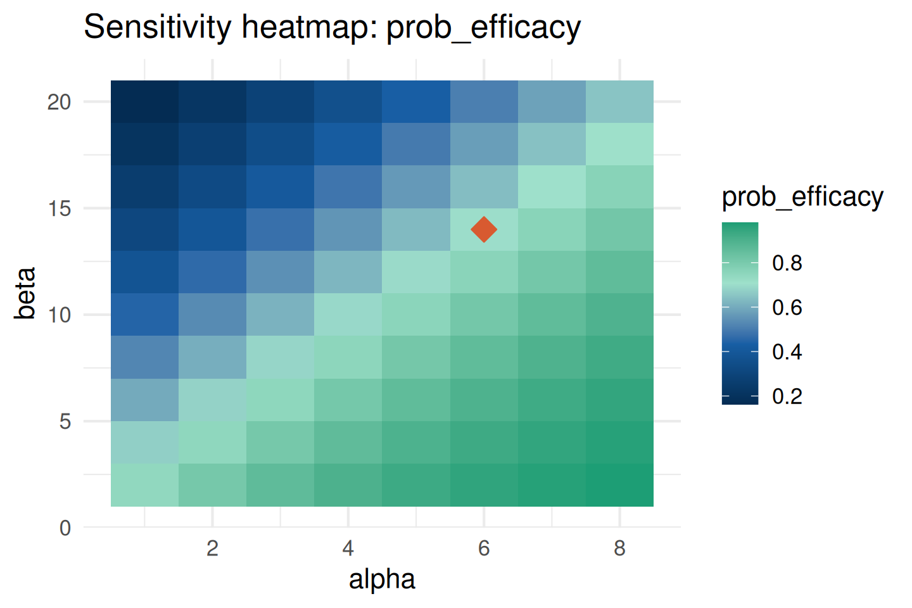
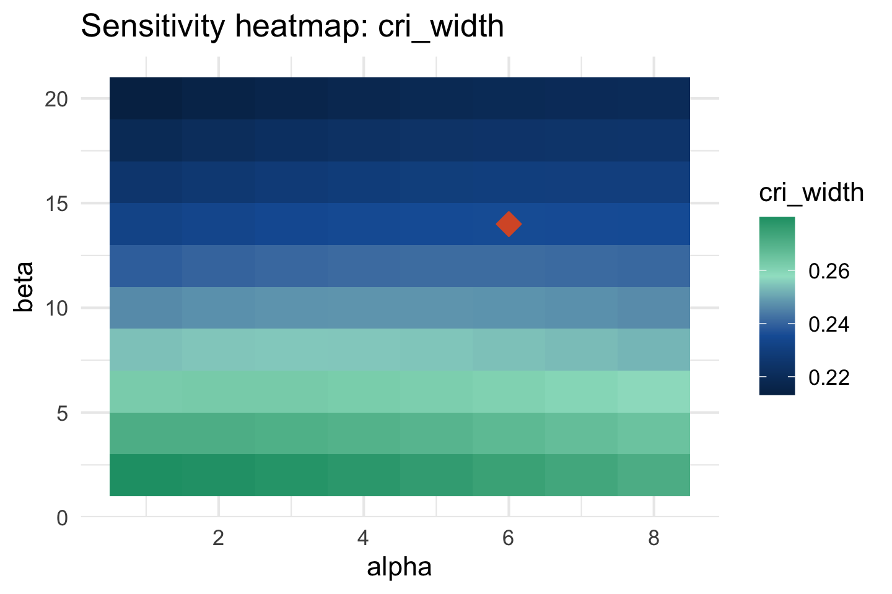
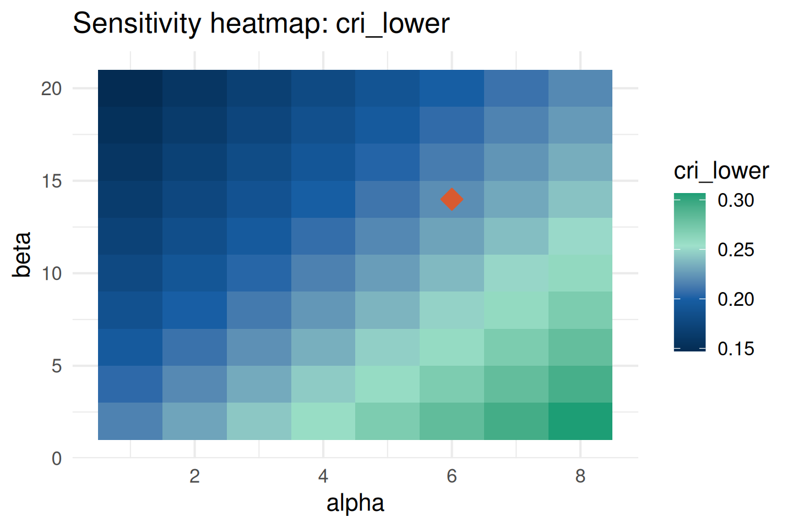
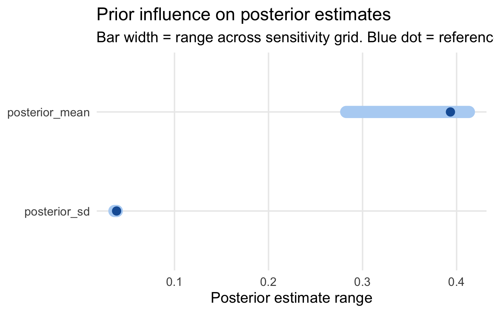
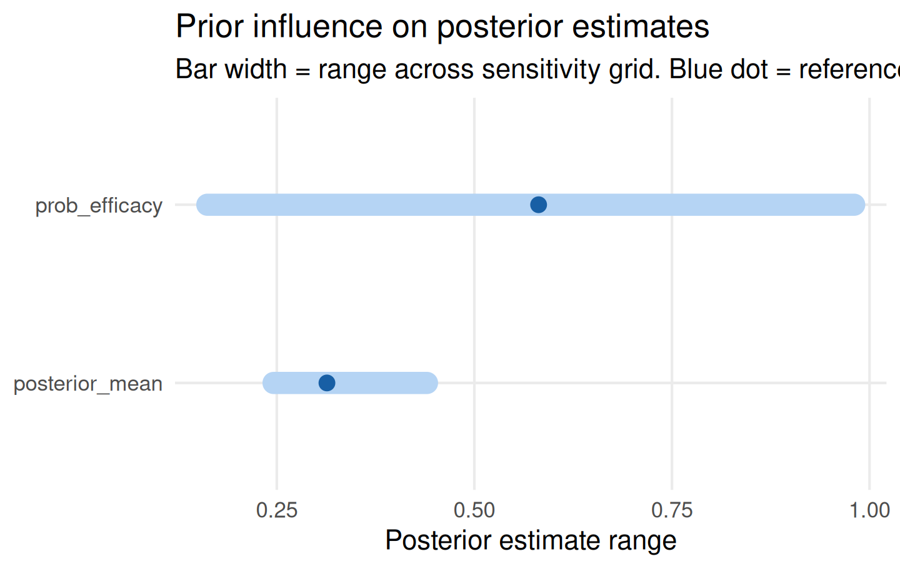

prior <- elicit_beta(
mean = 0.30,
sd = 0.10,
method = "moments",
label = "Response rate"
)
data_obs <- list(type = "binary", x = 14, n = 40)Sensitivity Analysis
Why Sensitivity Analysis Is Required
Regulatory guidelines — including the FDA Draft Guidance on Bayesian Statistical Methods (2026) and ICH E9(R1) — require demonstrating that trial conclusions are robust to plausible variations in prior specification. A sensitivity analysis answers the question: How much do posterior conclusions change if the prior hyperparameters are varied across their plausible range?
bayprior provides two dedicated sensitivity functions:
sensitivity_grid()— evaluates posterior mean, SD, and efficacy probabilitysensitivity_cri()— focuses specifically on credible interval width and bounds
Both are available in the Shiny app via the Sensitivity Analysis panel, which has an “Analysis type” toggle: Posterior quantities runs sensitivity_grid(); Credible interval runs sensitivity_cri() with a CrI level slider.
Setup
sensitivity_grid()
Basic Usage
Evaluates how posterior quantities change as hyperparameters vary over a Cartesian grid. The param_grid names must match the prior’s hyperparameter names (alpha and beta for a Beta prior):
sa <- sensitivity_grid(
prior = prior,
data_summary = data_obs,
param_grid = list(alpha = seq(1, 8, 1), beta = seq(2, 20, 2)),
target = c("posterior_mean", "prob_efficacy"),
threshold = 0.30
)The result is a bayprior_sensitivity object:
names(sa)
#> [1] "grid" "param_grid" "target" "reference_row"
#> [5] "influence_scores" "threshold" "prior"
sa$influence_scores
#> posterior_mean prob_efficacy
#> 0.1940984 0.8184416Influence scores are the range of each target quantity across the full hyperparameter grid — the primary regulatory summary statistic.
Tornado Plot
Ranks posterior quantities from most to least sensitive. Bar width equals the influence score. The blue dot marks the reference prior (closest grid point to the elicited hyperparameters):
plot_tornado(sa)
Influence Heatmap
Shows how the posterior mean changes across the two-dimensional hyperparameter grid. Useful for identifying which region of the prior space drives sensitivity:
plot_sensitivity(sa, target = "posterior_mean")
plot_sensitivity(sa, target = "prob_efficacy")
The orange diamond marks the reference prior. A well-specified prior should sit in a region of low colour gradient — indicating that small hyperparameter perturbations produce little change in posterior conclusions.
sensitivity_cri()
Tracks the width and bounds of the posterior credible interval (CrI) — a key quantity for regulatory submissions because it directly addresses whether the CrI for the treatment effect remains favourable across plausible prior specifications:
cri_sa <- sensitivity_cri(
prior = prior,
data_summary = data_obs,
param_grid = list(alpha = seq(1, 8, 1), beta = seq(2, 20, 2)),
cri_level = 0.95,
threshold = 0.30
)plot_sensitivity(cri_sa, target = "cri_width")
plot_sensitivity(cri_sa, target = "cri_lower")
The cri_sa$influence_scores gives the range of each CrI quantity:
round(cri_sa$influence_scores, 4)
#> cri_lower cri_upper cri_width posterior_mean posterior_sd
#> 0.1595 0.2175 0.0668 0.1941 0.0172
#> prob_efficacy
#> 0.8184Interpreting Influence Scores
library(knitr)
kable(data.frame(
Score = c("< 0.02", "0.02 - 0.05", "0.05 - 0.10", "> 0.10"),
Posterior = c("Negligible sensitivity",
"Low sensitivity — prior well-specified",
"Moderate sensitivity — consider reporting",
"High sensitivity — investigate further"),
check.names = FALSE
), align = "ll")| Score | Posterior |
|---|---|
| < 0.02 | Negligible sensitivity |
| 0.02 - 0.05 | Low sensitivity — prior well-specified |
| 0.05 - 0.10 | Moderate sensitivity — consider reporting |
| > 0.10 | High sensitivity — investigate further |
A posterior mean influence score of 0.03 means the posterior mean shifts by at most 3 percentage points across the entire plausible hyperparameter range — a regulatory-defensible result for most oncology trials.
Sensitivity for Other Prior Families
Normal Prior
For a continuous endpoint with a Normal prior:
prior_norm <- elicit_normal(
mean = 0.0,
sd = 0.3,
method = "moments",
label = "Log odds ratio"
)
sa_norm <- sensitivity_grid(
prior = prior_norm,
data_summary = list(type = "continuous", x = 0.4, sd = 0.3, n = 60),
param_grid = list(mu = seq(-0.5, 0.5, 0.25), sigma = seq(0.1, 0.6, 0.1)),
target = c("posterior_mean", "posterior_sd")
)
plot_tornado(sa_norm)
Mixture Prior
For mixture priors, sensitivity_grid() internally uses the dominant component for the hyperparameter grid — avoiding the complexity of gridding over mixture weights:
e1 <- elicit_beta(mean = 0.25, sd = 0.08, method = "moments",
expert_id = "E1", label = "Response rate")
e2 <- elicit_beta(mean = 0.40, sd = 0.10, method = "moments",
expert_id = "E2", label = "Response rate")
mix <- aggregate_experts(
priors = list(E1 = e1, E2 = e2),
weights = c(0.6, 0.4)
)
sa_mix <- sensitivity_grid(
prior = mix,
data_summary = data_obs,
param_grid = list(alpha = seq(1, 8, 1), beta = seq(2, 20, 2)),
target = c("posterior_mean", "prob_efficacy"),
threshold = 0.30
)
plot_tornado(sa_mix)
The Reference Row
The reference row is the grid point closest (in Euclidean distance) to the elicited prior’s hyperparameters. It serves as the anchor for interpreting the heatmap and influence scores:
# Which grid row is the reference?
sa$reference_row
#> [1] 54
# What are its parameter values?
sa$grid[sa$reference_row, c("alpha", "beta")]
#> alpha beta
#> 54 6 14Regulatory Reporting of Sensitivity
The standard regulatory narrative structure is:
- State the reference prior — hyperparameters and elicitation method
- Define the sensitivity range — how far hyperparameters were varied and why
- Report influence scores — for each target quantity
- State the conclusion — whether trial conclusions hold across the range
Example text:
“Sensitivity of the posterior response rate estimate to prior hyperparameter specification was assessed by varying \(\alpha\) from 1 to 8 and \(\beta\) from 2 to 20. The posterior mean influence score was 0.194, indicating that the posterior mean shifts by at most 19.4 percentage points across the full sensitivity range. Trial conclusions are robust to the choice of prior hyperparameters within the pre-specified plausible range.”
References
FDA (2026). Draft Guidance: Bayesian Statistical Methods for Drug and Biological Products.
ICH E9(R1) (2019). Statistical Principles for Clinical Trials: Addendum on Estimands and Sensitivity Analysis.